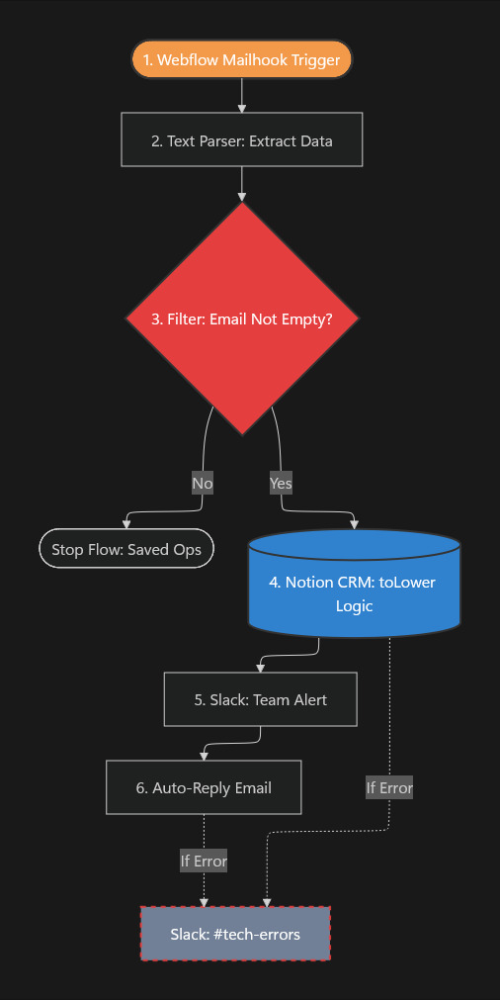

Automated Lead
Capture Engine.
Pretvaranje haotičnih inboxa u inteligentan sistem koji obrađuje podatke u realnom vremenu — bez greške, bez kašnjenja.
Smanjeno sa prosečnih 15 minuta na skoro trenutni odgovor.
Mesečno oslobođeno vreme od manuelnog unosa.
Nula izgubljenih leadova u poslednjih 6 meseci.
The Challenge
Za SMB kompanije, spora reakcija na upit znači direktan gubitak novca. Manuelno kopiranje podataka u tabele je kreiralo usko grlo i česte greške u formatiranju.
The Solution
Konstruisan je end-to-end "lead-to-sheet" pajplajn. Webhook sa Webflow-a pokreće Make.com scenario koji čisti podatke, vrši validaciju, skladišti ih u Google Sheets i šalje personalizovani Slack alert prodajnom timu.

Engine: Make.com kompleksna logika sa error-handlingom.

Output: Strukturirani podaci spremni za prodaju.